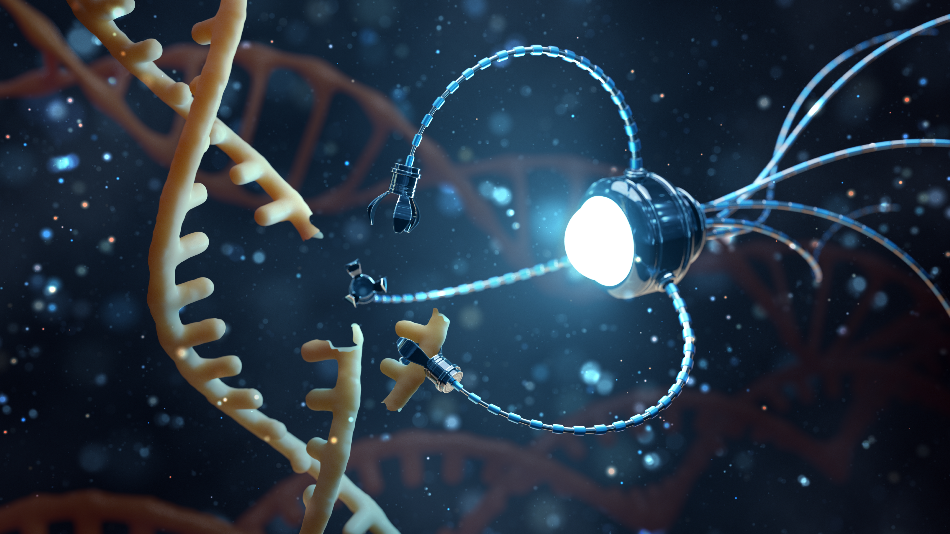

Self-driving vehicles employ a wide range of technologies like radar, cameras, ultrasound, and radio antennas to navigate safely on our roads. In modern autonomous vehicles, these technologies are used in conjunction with one another, as each one provides a layer of autonomy that helps make the entire system more reliable and robust. For example, Tesla’s driverless car technology, known as “Autopilot”, uses eight cameras to provide 360-degree visibility, while twelve ultrasonic sensors and a front-facing radar work to analyze the vehicle’s surroundings for potential hazards.
A reusable launch system is a launch system that allows for the reuse of some or all of the component stages. Falcon 9 is a reusable, two-stage rocket designed and manufactured by SpaceX for the reliable and safe transport of people and payloads into Earth orbit and beyond. Falcon 9 is the world’s first orbital class reusable rocket. Its reusability allows to refly the most expensive parts of the rocket, which in turn drives down the cost of space access.
Nanotechnology is an exciting emerging field of research with applications in all STEM disciplines including the physical, chemical, life, Earth and environmental sciences and allied disciplines in materials science and engineering. Nanotechnology provides unprecedented opportunities for frontier research at the interfaces between these STEM disciplines by studying the properties of materials on the nanoscale.

Because drones are miniature marvels, they're the perfect size — and price — to bring into the classroom, offering a lot of bang for the educational buck. They can quickly capture students' attention and spark their imaginations, which is a critical first step for any learning initiative. Once they're hooked, students can use drones to explore many aspects of STEM. Young students can design simple tests to see how much a drone can carry, find the most efficient flight route to deliver a package and more.